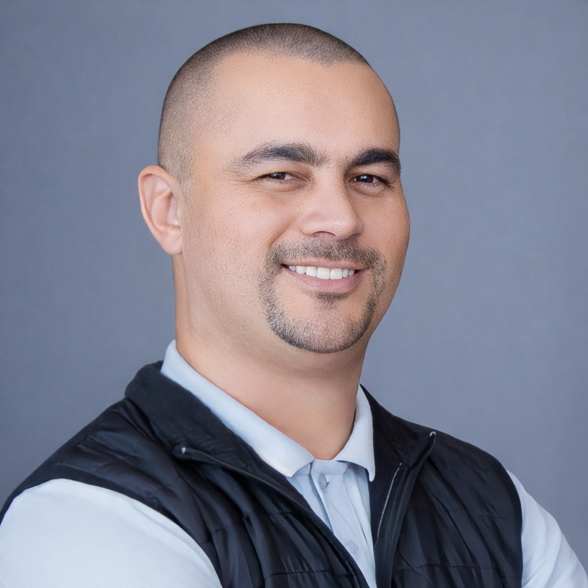

8ª Semana de Tecnologia · Senac Maringá · Caminho para o Sucesso
Carreira em
tecnologia
não é uma linha reta.
IA · Visão Computacional · Engenharia de Software · Construção de Repertório

Bruno Pinha
Engenheiro de Software · Pesquisador · Empreendedor
21H → 22H
Faculdade Senac Maringá
02 / 24
a pergunta central
O que conecta
tudo isso?
EletrônicaSistemas Embarcados
DelphiSistemas Corporativos
ArquiteturaGestão
EmpreendedorismoMestrado UEM
Visão ComputacionalIA
PesoCamDocência
Não foi uma linha reta. Mas existe uma lógica.
03 / 24
"Minha carreira não foi definida
pelas linguagens que dominei,
mas pelos problemas
que aprendi a resolver."
— Bruno Pinha
04 / 24
a metáfora central
Carreira como stack profissional
Assim como um sistema tem camadas, uma carreira também tem.
O que aparece é o topo. O que sustenta está embaixo.
01 · Eletrônica e mundo físicobase
02 · Programação e sistemas reais
03 · Análise, arquitetura e legados
04 · Gestão, projetos e pessoas
05 · Empreendedorismo
06 · Pesquisa acadêmica
07 · IA · Visão Computacional · PesoCamagora
05 / 24
camada 1
Eletrônica
e mundo físico
// antes do código havia o circuito
Sensor, ruído, alimentação instável, ambiente hostil, hardware com limitações reais. Essa camada ensina o que nenhuma linguagem ensina: software roda em contextos reais, com restrições reais.
Software não é abstração pura.
É decisão executando no mundo físico.
06 / 24
camada 2
Programação
e sistemas reais
// Delphi · gestão pública · regras de negócio
Sistemas de planejamento orçamentário municipal. Regras fiscais e tributárias. Migrações de dados entre sistemas concorrentes. Código que precisava funcionar no dia seguinte porque havia uma prefeitura dependendo dele.
Programar é traduzir regras de negócio
em sistemas que precisam funcionar.
07 / 24
camada 3
Arquitetura
e sistemas legados
// modernização · integração · evolução sem parar
Sistemas legados não são problemas esperando descarte. São patrimônios que sustentam operações críticas. Modernizá-los exige mais do que código limpo — exige entendimento profundo de contexto, risco, dependências e consequências.
Código resolve uma parte do problema.
Entendimento resolve o problema certo.
08 / 24
camada 4
Gestão de projetos
e pessoas
// escopo · prazo · risco · comunicação · decisão
Gerenciar projetos de software ensina uma verdade incômoda: os problemas mais difíceis raramente são técnicos. São de comunicação, priorização, expectativa, negociação e decisão sob incerteza.
Software é técnico, mas nunca é só técnico.
09 / 24
camada 5
Empreendedorismo
Macro Informática
Escola de informática · 500+ alunos · mercado em transformação acelerada
Conmarket
Minimercados autônomos · PDV interno · operação real 2020–2024
CodersWise
Consultoria · arquitetura · modernização de sistemas legados
PesoCam
Visão computacional · pecuária de precisão · agora
Tecnologia só vira negócio
quando resolve uma dor real.

10 / 24
camada 6
Retorno à pesquisa
// prática
20+ anos de experiência real. Sistemas que falharam e funcionaram. Decisões difíceis. Produtos que não foram adiante. Aprendizado acumulado no campo.
// pesquisa
Mestrado em Ciência da Computação na UEM. Método científico, hipótese, validação, estado da arte. Transformar experiência em contribuição verificável.
A prática mostra onde dói.
A pesquisa ajuda a provar o caminho.
11 / 24
camada 7 — convergência
PesoCam
Quando eletrônica, engenharia, arquitetura, pesquisa, empreendedorismo e IA se encontram em um problema real.
HardwareCâmera 3D
Visão ComputacionalIA
Eng. SoftwarePesquisaMercado
Nada foi perdido. Tudo virou repertório.
12 / 24
o problema antes da solução
Na pecuária,
peso é decisão.
Peso define compra, venda, nutrição, sanidade, produtividade e resultado econômico. É uma informação estratégica capturada hoje com estrutura física, contenção, balança, deslocamento, mão de obra, tempo e estresse animal.
13 / 24
"E se fosse possível
estimar o peso
de um bovino
sem contato físico?"
// visão computacional · profundidade 3D · IA · campo

14 / 24
a solução em alto nível
Pipeline do PesoCam
🐄
Bovino
→
📷
Câmera 3D
OAK-D-Pro-W
→
RGB +
Profundidade
→
⚙️
Borda
local
→
Pipeline
SW
→
🧠
Modelo
IA
→
⚖️
Estimativa
→
📊
Decisão
Captura no campo. Processamento local. Estimativa sem depender de conexão estável. Resultado no ponto de manejo.
15 / 24
por que é mais difícil do que parece
Câmera aponta.
Mundo complica.
MovimentoO animal não para. Captura em movimento exige precisão e tolerância a artefatos.
AmbientePoeira, lama, variação de luz natural, sombra. O campo não é laboratório.
DatasetNão existe base pública. Cada dado precisa ser coletado e anotado no campo, com balança de referência.
ValidaçãoA margem de erro precisa ser aceitável para decisões econômicas reais do produtor.
16 / 24
o sistema por trás da ideia
PesoCam cruza nove domínios
17 / 24
"A IA estima.
A câmera captura.
O algoritmo calcula.
Mas é a engenharia
que transforma tudo isso
em produto confiável."
18 / 24
validações externas
Oportunidades não
aparecem do nada.
GDIN 2026 — Coreia do Sul

AI & Digital Transformation Global PoC Support Program · ecossistema internacional de inovação · interlocução com DeepFarm.net
Incubadora Tecnológica de Ivaiporã
Incubação no contexto de Agrotech · validação regional e acesso a rede de suporte
Mestrado UEM
Pesquisa acadêmica ancorada no projeto · validação científica do método e dos resultados
Projeto + clareza + exposição + rede = oportunidade real.
19 / 24
ia assistida e responsabilidade técnica
IA não substitui
entendimento.
// o que IA faz bem
Estruturar ideias. Pesquisar alternativas. Gerar código inicial. Documentar. Comparar abordagens. Acelerar raciocínio.
// o que IA não substitui
Entender o problema. Formular a pergunta certa. Avaliar a resposta. Tomar decisões. Validar hipóteses. Assumir responsabilidade técnica.
Quem não entende o problema
usa IA para errar mais rápido.
20 / 24
velocidade sem clareza é débito técnico
Quando ficou mais fácil
gerar código,
ficou mais importante
saber o que construir.
// entendimentoNão terceirizamos entendimento. Código sem contexto é ruído.
// arquiteturaArquitetura sustenta, não adorna. Decisões estruturais importam.
// responsabilidadeAutomação não substitui responsabilidade técnica e profissional.
// profundidadeSoftware sério não nasce de improviso. Construímos para durar.
21 / 24
para quem está construindo
Você não precisa saber
onde vai chegar.
Vai ser desenvolvedor, arquiteto, pesquisador, gestor, empreendedor, professor, especialista em IA? Tudo bem não saber ainda. O que importa agora é construir uma base que consiga conectar oportunidades quando elas aparecerem.
FundamentosLinguagens passam. Raciocínio lógico, estruturas e arquitetura ficam.
Projetos reaisUm projeto real ensina mais do que dez projetos de aula fictícios.
ComunicaçãoA ideia que não se comunica não existe. Escreva, apresente, publique.
ResiliênciaNenhuma fase é pequena. Cada experiência vira camada de repertório.
22 / 24
"Networking não é pedir oportunidade
para desconhecido.
Networking é construir confiança
antes da oportunidade existir."
EventosProfessoresComunidades
PublicaçõesProjetos documentadosConsistência
23 / 24
a próxima camada
Docência:
ensinar também é
construir futuro.
O convite para lecionar na Unicesumar não é uma ruptura. É mais uma camada. Quem passa anos resolvendo problemas reais tem um repertório que vale ser formalizado, compartilhado e questionado. Ensinar é também uma forma de aprender com mais profundidade.
Tecnologia se constrói com pessoas.
Pessoas se formam com referências reais.
24 / 24
"Não despreze nenhuma fase
da sua jornada.
Ela pode ser a camada que vai
sustentar sua próxima
grande oportunidade."